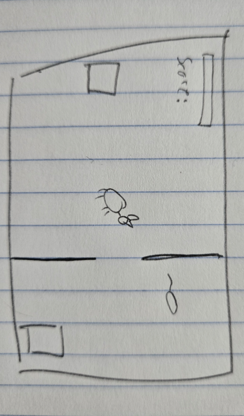
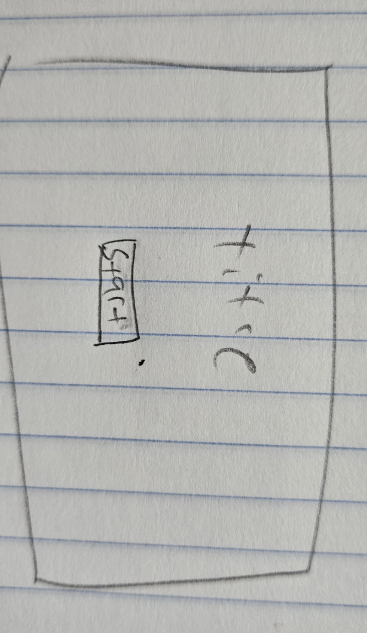

Title: Lil Kitty
A 2D world drawn from the top down where you are a cat exploring the basement of a house. There are things to interact such as you can score points by catching mice. Short experience that will end once a certain number of things are explored.
Top-down adventure / exploration game.
Desktop only.
You are a cat that got trapped in the basement and needs to escape.
Aiming for a kind of pixel art thats detailed enough to not look too blocky but still seem like a style. Also, a darker theme in general.
Arrow / WASD keys to move and the player will learn to play by a image that shows at the start with the controls then it fades once the player starts playing and exploring.
Include at least two mockup images of the game interface.
 Using PIXI JS for visuals and howler for sound.
Name: Max Murphy
Major Game Design and Development
Year: 2
Skills & Interests: Skills include graphics programming and making game systems from scratch to use.